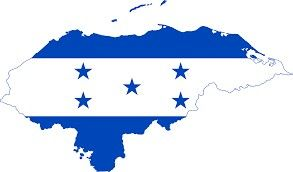
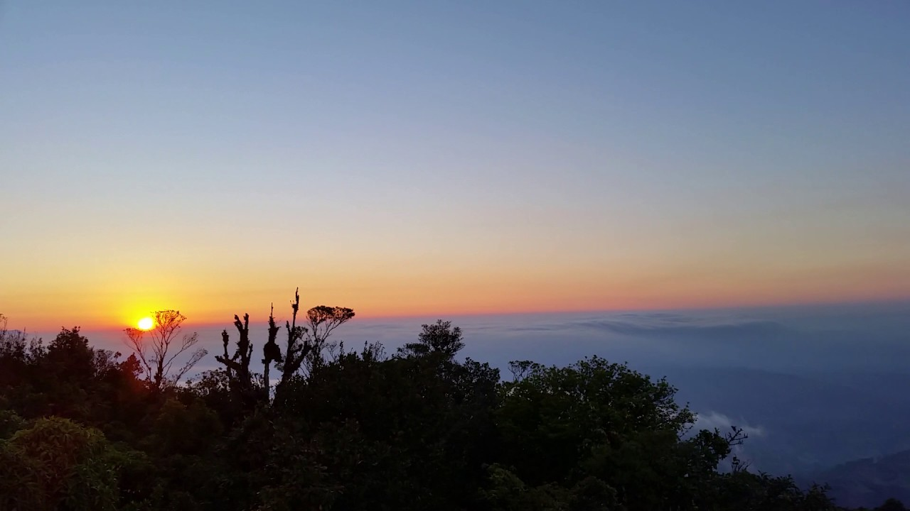
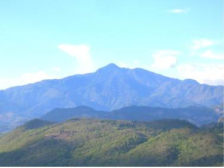

|  |
Honduras al Natural |
|
| Inicio | Artículos | Contacto |
Montaña de Puca |
||
|  | ||
El Refugio de Vida Silvestre Montaña de Puca (actualmente), y que próximamente se convertirá en Parque Nacional PUCA. Se encuentra ubicado entre los municipios de La Iguala, Lepaera, Las Flores y Gracias, todos en el departamento de Lempira, el mismo posee una extensión territorial de 6,042.50 hectáreas de las cuales 1,720 hectáreas son de zona núcleo y 4,342.50 de zona de amortiguamiento. |
||
|  | ||
| La Montaña de Puca con el pico homónimo Puca es una cordillera montañosa de la geografía de Honduras. Su punto más elevado, tiene una altitud de: 2,234 metros sobre el nivel del mar. En el extremo norte se encuentra la localidad de Lepaera, en el departamento de Lempira. Esta montaña le da el nombre a la Sierra de Puca y que constituye la línea fronteriza entre los departamentos de Lempira y Santa Bárbara. | ||